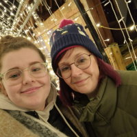

<!DOCTYPE html>
<html lang="en">
  <head>
    <meta charset="UTF-8" />
    <link rel="icon" type="image/svg+xml" href="favicon.svg" />
    <meta name="viewport" content="width=device-width, initial-scale=1.0" />
    <title>ThoughtfulMindsTherapy</title>
    <title>ThoughtfulMindsTherapy</title>
    <link rel="preconnect" href="https://fonts.googleapis.com" />
    <link rel="preconnect" href="https://fonts.gstatic.com" crossorigin />
    <link
      href="https://fonts.googleapis.com/css2?family=Grandstander:ital,wght@0,100..900;1,100..900&family=Noto+Sans:ital,wght@0,100..900;1,100..900&display=swap"
      rel="stylesheet"
    />
    <link rel="stylesheet" href="style.css" />
     <link rel="stylesheet" href="media.css" />
    <link rel="stylesheet" href="Footer.css" />
    <link
      rel="stylesheet"
      href="https://cdnjs.cloudflare.com/ajax/libs/font-awesome/6.5.1/css/all.min.css"
      integrity="sha512-DTOQO9RWCH3ppGqcWaEA1BIZOC6xxalwEsw9c2QQeAIftl+Vegovlnee1c9QX4TctnWMn13TZye+giMm8e2LwA=="
      crossorigin="anonymous"
      referrerpolicy="no-referrer"
    />
  </head>
</html>

 <body class="body">
    <header class="primary-header" data-overlay="false">
      <div class="container">
        <div class="nav-wrapper">
          <a href="index.html">
            
          </a>

          <button class="mobile-nav-toggle" aria-controls="primary-navigation" aria-expanded="false">
            <i class="fas fa-bars icon-open"></i>
            <i class="fas fa-times icon-close"></i>
          </button>

          <nav class="primary-navigation" id="primary-navigation" data-visible="false">
            <ul aria-label="Primary" role="list" class="nav-list">
              <li><a href="AboutMe.html">About Me</a></li>
              <li>
                <a href="Services.html">Services</a>
                <ul class="service-drop-down">
                  <li><a href="Walking&Talking.html">Walking & Talking</a></li>
                  <li><a href="Counciling.html"> Counciling </a></li>
                  <li><a href="ADHDCoaching.html"> ADHD Coaching </a></li>
                  <li><a href="WellnessCoaching.html"> Wellness Coaching </a></li>
                </ul>
              </li>
              <li><a href="ContactMe.html">Contact Me</a></li>
            </ul>
          </nav>
        </div>
      </div>
    </header>

    <script src="Main.js"></script>
  </body>

  <main>
    <section>
      <div class="TitleHeading">
        <h1 class="ff-heading">ABOUT ME</h1>
      </div>
    </section>
  </main>

  <div id="Aboutme">
    <div class="scallop">
      
      <p class="ff-body">
        Welcome to Thoughtful Minds Therapy! My name is Niki and I am bringing
        therapy and coaching to one location, you can choose whichever direction
        suits you best! Do you want to go back into the past and explore what
        has brought to where you are now or explore how to create the future you
        want. The choice is yours to make.
      </p>
    </div>

<section class="aboutme-content">
  <div class="TitleHeading">
    <h1 class="ff-heading">MY JOURNEY</h1>
  </div>
  <div class="journey">
    <h2 class="ff-subheading">My Family</h2>
    <div class="journey-content row">
      <p class="ff-body">
        A little about myself, I am married with 3 grown humans who have all
        left home, we have a Newfoundland called Charlie and are Grandparents
        to a Cavapoo called Otis. I have a crazy large extended family, with
        many family members being neurodivergent. I love getting outside,
        walking, enjoying the countryside, going to the theatre, having
        adventures, good food, going to the gym and generally challenging
        myself. I have over five years’ experience working in the therapeutic
        world, whilst working pastorally with children and young adults prior
        to that.
      </p>
      
    </div>
  </div>
</section>

<section class="aboutme-content">
  <div class="journey">
    <h2 class="ff-subheading">My Therapy</h2>
    <div class="journey-content row-reverse">
      
      <p class="ff-body">
        I offer a variety of ways to manage your emotions and support the
        changes you may want to make, we can talk, we can look at strategies
        to support emotions and bring about change, we can work in a somatic
        way to connect the mind, body and soul…after all we are one, we can
        walk and talk if being outdoors is your thing, we can work online, we
        can use gentle interventions such as Drawing and Talking as well as
        specialist techniques for trauma and phobias, Rewind and CATT
        Children’s Accelerated Trauma Therapy.
      </p>
    </div>
  </div>
</section>


    <footer>
      <div class="footerContainer">
        <div class="socialIcons">
          <a href=""><i class="fa-brands fa-facebook"></i></a>
          <a href=""><i class="fa-brands fa-instagram"></i></a>
          <a href=""><i class="fa-brands fa-google-plus"></i></a>
        </div>
        <div class="footerNav">
          <ul>
            <li><a href="index.html">Home</a></li>
            <li><a href="AboutMe.html">About</a></li>
            <li><a href="ContactMe.html">Contact Us</a></li>
            <li><a href="Services.html">Services</a></li>
          </ul>
        </div>
      </div>
      <div class="footerBottom">
        <p>
          Copyright &copy;2024; Designed by
          <span class="designer">A.Longson</span>
        </p>
      </div>
    </footer>
  </div>
</body>
